suivant: Fin de l'installation monter: Installation du serveur précédent: Préparations Table des matières
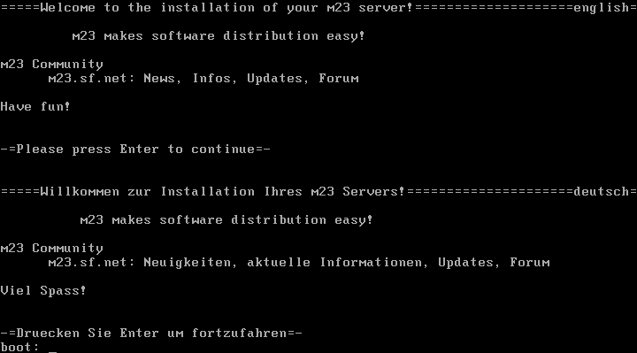
Ceci est l'affichage d'amorçage du CD de l'installation de m23. Après que vous ayez appuyé sur la touche Retour, le système d'exploitation Linux amorcera du CD et commencera avec le programme de l'installation.
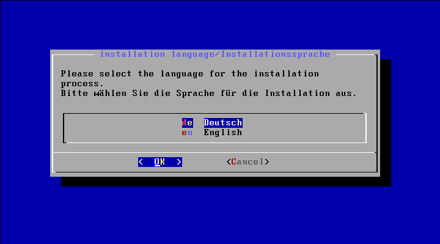
Vous pouvez choisir si vous voulez exécuter le programme d'installation en allemand ou en anglais. Ici, nous supposons que vous vous déciderez pour l'anglais.
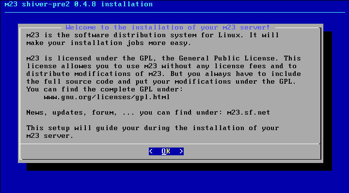
Un petit Bienvenu.
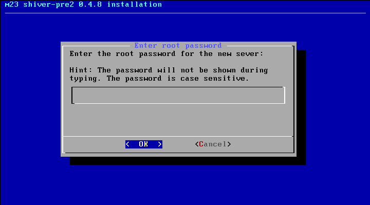
Entrez le mot de passe de la racine. Root (racine) est l'administrateur du système avec accès illimité au serveur m23. Vous devriez choisir un mot de passe qui ne peut pas être deviné facilement et qui consiste au moins de 10 caractères. Vous devriez aussi employer des caractères spéciaux, des chiffres et des majuscules et des minuscules.
Comme le mot de passe n'est pas montrée, il sera controlé par une deuxième entrée dans le dialogue suivant.

Le hostname est le nom pour le serveur.
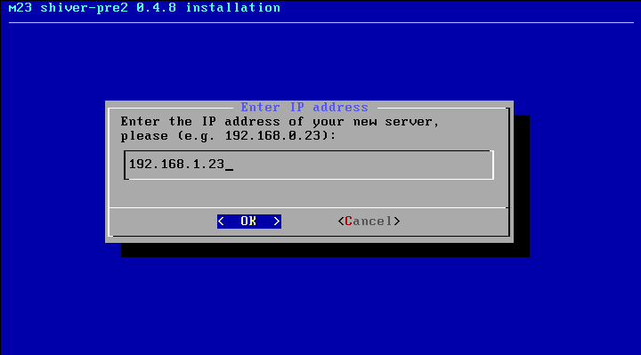
L'adresse IP que vous voulez assigner au serveur. Vous devriez choisir l'adresse d'une façon qui rend les clients capable d'atteindre le serveur sans l'emploi d'un routeur.
L'adresse du réseau. C'est l'adresse sous laquelle le réseau est accessible.
Le masque du réseau indique, quelle partie de l'adresse IP appartient au ordinateur particulier et quelle partie masque le réseau.
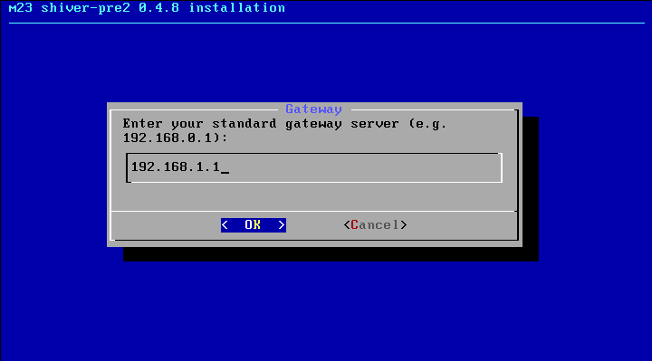
L'IP de la passerelle indique l'adresse IP, par laquelle les demandes aux adresses IP sont dirigées, qui se trouvent hors du réseau du serveur.
Pour la dissolution des noms URL en des adresses IP, il est nécessaire d'employer un serveur de noms DNS, qui exécute la transformation. Par exemple, ftp.debian.org devient 128.101.80.131. Si vous ne connaissez pas de serveur de noms DNS, vous pouvez utiliser l'adresse IP 134.245.10.36. Celle-ci est l'adresse du serveur de noms DNS de l'université de Kiel.
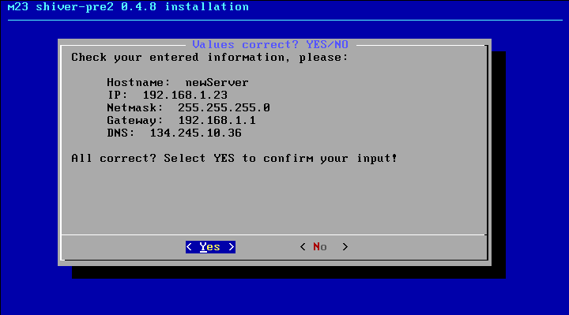
Ici, vous avez la possibilité de contrôler, si vos entrées sont correctes. Si vous voulez continuer avec l'installation, choisissez Yes, sinon, vous pouvez corriger vos entrées après avoir choisi No.
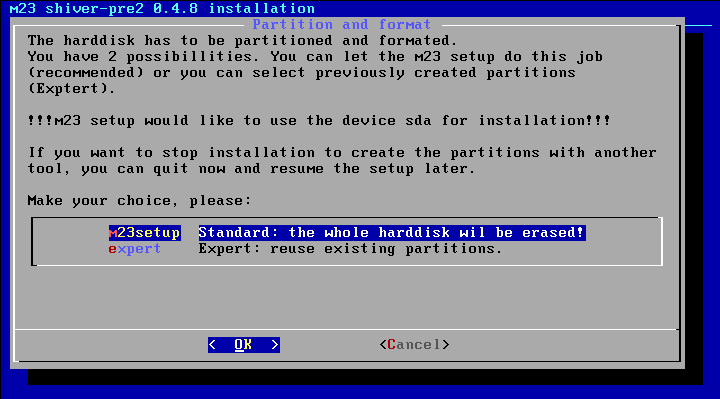
Ici, vous pouvez choisir si vous voulez employer le disque dur tout entier du serveur pour m23. Cela a pour résultat que 2 partitions seront établies, une pour le système d'exploitation Debian/Linux et une pour la permutation. S'il y a plusieurs disques durs, le premier sera utilisé. Mais vous pouvez aussi utiliser des partitions que vous avez établies auparavant si vous souhaitez un partitionnement spécial.
Information supplémentaire concernant le partitionnement
Notez que, pendant l'installation, le serveur sera effacé complètement si vous n'avez pas établi deux partitions sur le premier disque dur (hda ou sda) avec un programme comme Parted, fdisk, cfdisk etc. comme c'est indiqué au suivant:
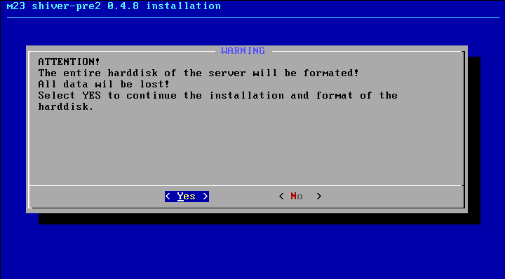
Le dernier avertissement ;)
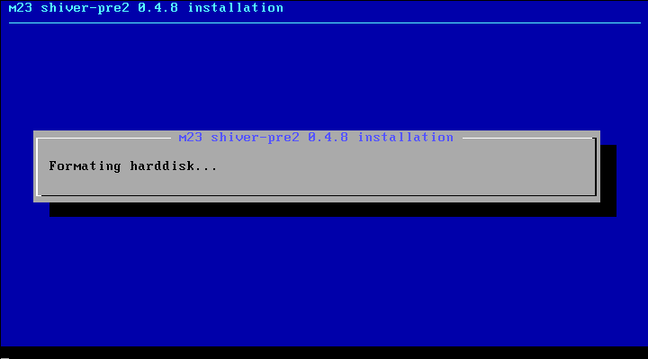
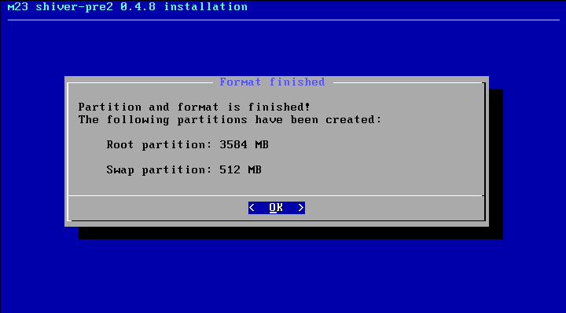
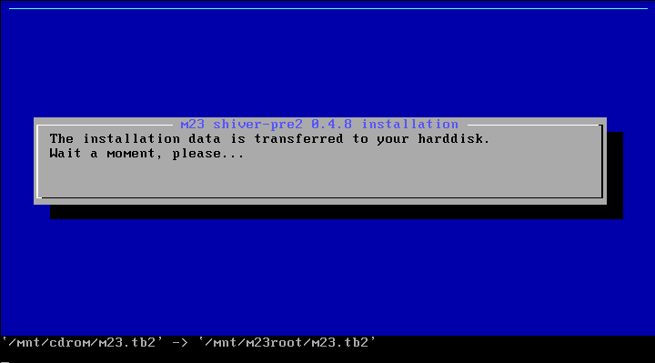
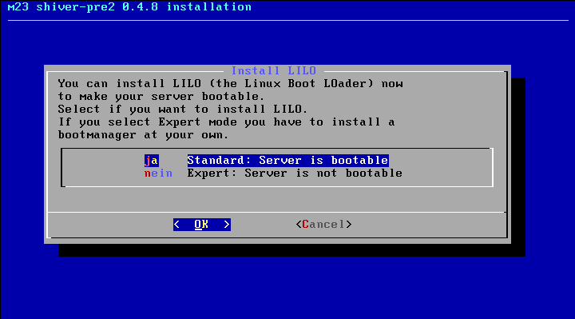
Ici, vous pouvez décider si vous voulez installer le gestionnaire d'amorçage LILO (LInux LOader). Ceci sera installé dans le MBR (MasterBootRecord) du premier disque dur. Si vous vous décidez contre, vous devez installer un gestionnaire d'amorçage vous-même. Sinon, le serveur m23 ne peut pas amorcer.
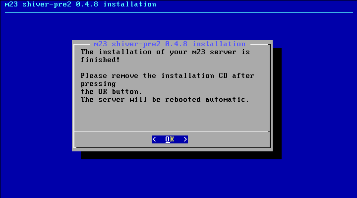
L'installation est terminée ;)